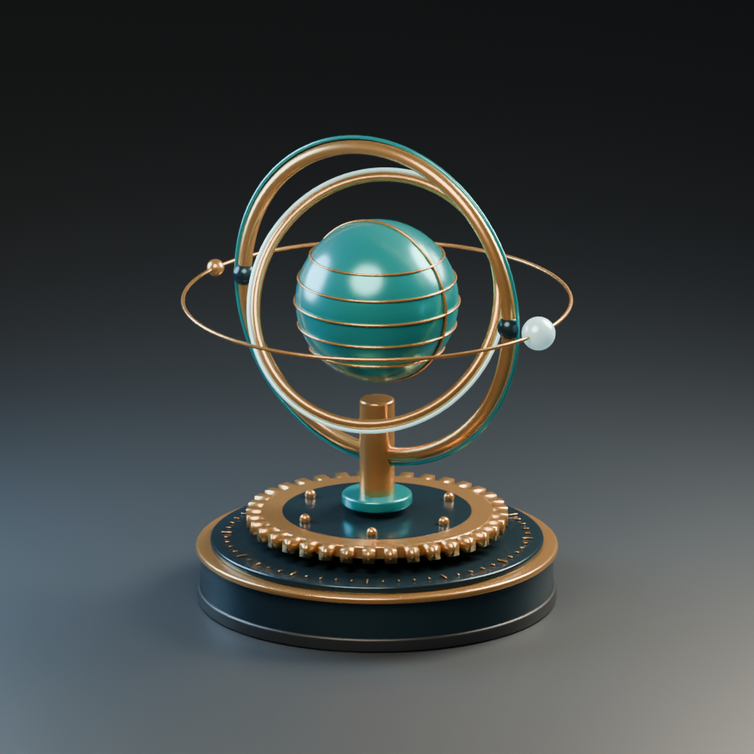

からくり惑星の影
斜め上から光を当てています。リングが回ると、青緑の惑星を細い影が横切ります。
iPhoneで試す
Safariで画像をタップし、ARで机に置いてください。
連続移動する影の帯（試作）
リング1本分の影を、小さな帯に分けて惑星の表面に沿って動かします。

8コマ版・12コマ版と見比べる
毎秒8コマ
毎秒12コマ
Pixel 7で試す
3Dモデルを読み込んでいます…
Pixel 7のChromeでARを起動し、机にカメラを向けます。輪が出たら、置きたい場所で画面をタップしてください。